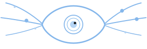

Awareness is a portable knowledge store for your life. Tell one AI about your health, your projects, your preferences — and every AI you use knows it. Permanently, portably, privately.
A compact summary of what matters right now — fired intentions, source health, active alerts, or silence confirming everything was checked.
docker compose up -d starts awareness with Postgres.
Or run the install script for a guided setup. No cloud account needed —
everything runs on your machine.
Add one MCP server URL to Claude Desktop, Claude Code, Cursor, or any MCP client. Every connected AI reads the same briefing and writes to the same store.
Say "remember my dentist is Dr. Park" in any conversation.
It's stored with tags, timestamps, and changelog. Every AI you use can
retrieve it from now on.
Tell your AI about a medication on your phone. Ask about drug interactions on your laptop. Awareness is the portable layer that makes all your AI tools feel like one system.
Your fridge model number. Your wedding anniversary. The fact that you tend to overdress when it's cold. Tell one AI, and every AI you use knows — forever.
"Remind me to call the dentist next Tuesday." The intention fires automatically in your next conversation after Tuesday — on any platform, any device.
Start a feature in Claude Code, discuss the design in Claude.ai, review in Cursor. Decisions and project context follow you without re-explaining.
NAS, Proxmox, Docker — edge daemons report status and awareness tells your AI before you ask. Silence confirms things are fine.
Insurance policy numbers, family contacts, financial accounts. Tell your AI once and it's stored with type, tags, and timestamps. No re-explaining, ever.
Every entry is timestamped and changelog-tracked. Why that architecture? Why that financial choice? The reasoning is preserved at the moment you decided.
Awareness checks your systems, your health data, your reminders — every conversation. When nothing needs your attention, it says so. No notification. No interruption. Just quiet confirmation that everything was checked and everything is fine.
When something does need you, it surfaces exactly that — and nothing else. An attention firewall, not another notification source.
One person's knowledge, portable across every AI. Working today.
Shared household store. Who's picking up the kids? When was the furnace serviced?
Project knowledge that accumulates through work, not meetings.
Institutional memory for orgs with zero software budget.
What started as a homelab monitoring experiment turned into a portable knowledge layer for your entire life. A single line in Claude's memory — “check the NAS health on each conversation” — worked surprisingly well. The AI applied contextual judgment, learned what was normal, and surfaced what wasn't.
But it had obvious limits. Knowledge was locked to one platform. It only worked with one system. Diagnostics weren't captured at detection time.
Awareness is the generalization of that experiment — multi-source, multi-platform, portable knowledge that any AI agent can read and write.
One command. No account needed. Your data stays on your machine.